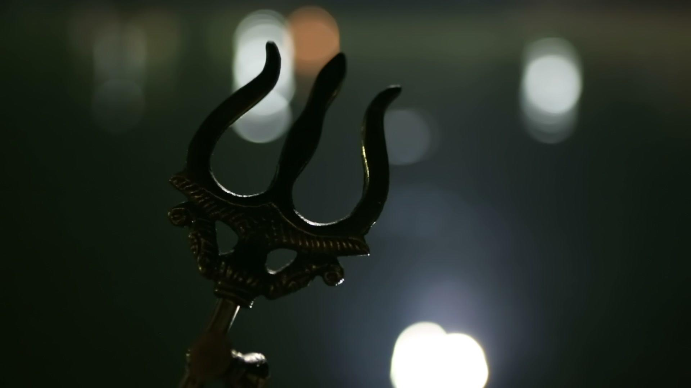
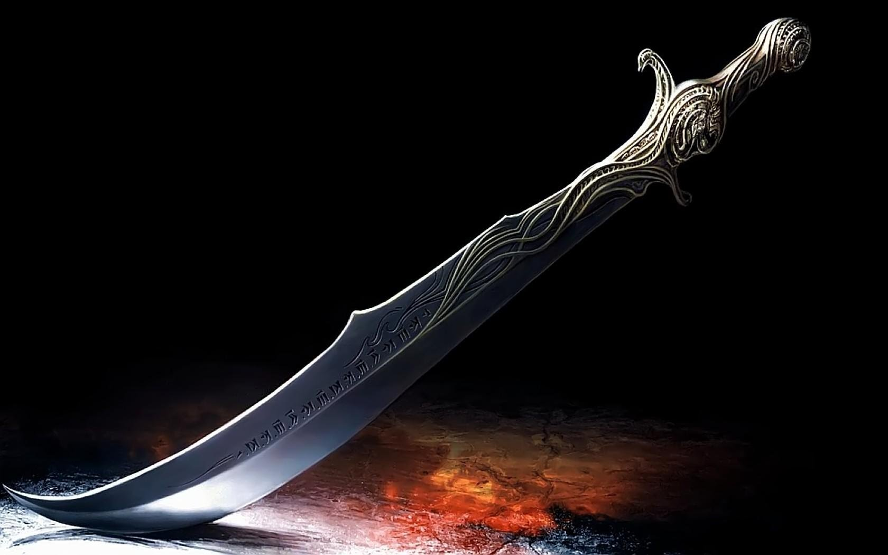
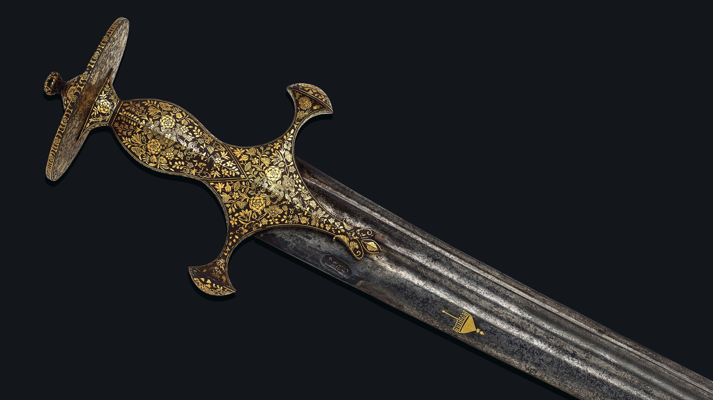

India is known for its traditional weaponry culture. In ancient India, people had their own designed weapons for every kind of situation. “Bearer of Weapon” will be a game that will make today’s people aware of the great history of our ancient weapons. And not only that, this game will also teach people how to survive in the jungle.
The game will start with an animation, which will guide the player about the levels. This game is divided into five levels. The player has to pass through the jungle so that he can cross all those levels. All the wild animals of the jungle will attack the player one by one. The player will have all the kinds of ancient weapons to protect himself. But the player have to decide which weapon to use for different animals. Because for every animal we has to use different weapons. If the player choose the right weapon, then that level will complete and player will move into the next level. The last level of this game will be the most difficult one because the player will have to face multiple animals together. The purpose of this game is to give the knowledge of our ancient weapons to the player and teach him how to survive in the jungle.
Our game is totally different from all the existing games because our main focus is to aware the players about the great past of our ancient weapons. All the existing games in play store focus only on the survival of the player. Although this game will also teach the player to survive in the jungle but our main purpose will be to aware the younger ones about our ancient weapons.
Our game is totally based on the Indian culture. This game will enhance the knowledge of our ancient weaponry culture to the player. In ancient times, India had their own designed weapons for every kind of problem. India had several types of weapons including bows and arrows, swords, double-handed broadswords, spears, javelins, lances, axes, pikes, clubs and maces.
A goad is carried by the mahout or elephant driver. The sharp point and hook was used to guide the animal to behave or move in a specific way, making it a crucial tool for hunting expeditions. The steel blade here features fantastical creatures, while the brass butt is formed by a dog-like animal issuing from a tiger’s mouth. Since it is ornately decorated, it may have also been intended for display in ceremonial processions. The elephant goad is a tool employed by mahout in the handling and training of elephants. It consists of a hook (usually bronze or steel) which is attached to a 60–90 cm (2.0–3.0 ft) handle, ending in a tapered end.
A hunting sword is a type of single-handed short sword that dates to the 12th Century. A hunting sword usually has a straight, single-edged, pointed blade typically no more than 36 inches long. A sword is a bladed melee weapon intended for cutting or thrusting that is longer than a knife or dagger, consisting of a long blade attached to a hilt. The precise definition of the term varies with the historical epoch or the geographic region under consideration. The blade can be straight or curved. Thrusting swords have a pointed tip on the blade, and tend to be straighter; slashing swords have a sharpened cutting edge on one or both sides of the blade, and are more likely to be curved. Many swords are designed for both thrusting and slashing.